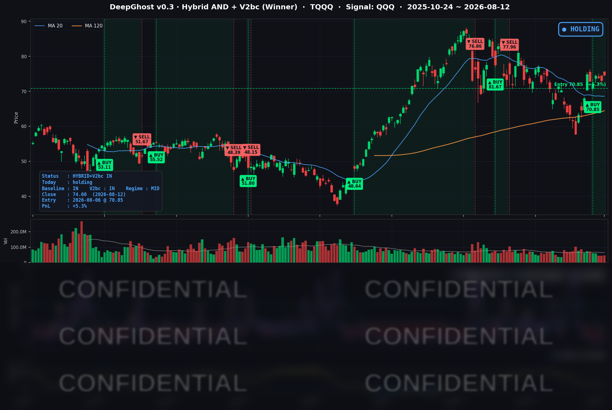

👻 매일 시그널과 히스토리를 홈페이지에서 한눈에 → www.ghostai.co.kr
7월 CPI가 예상대로 나오며 인플레 불안이 약간 안정되었습니다. 아직 유가 이슈가 남아 있어서 안심하긴 이릅니다. 직전 랠리처럼 한 방향으로 오르긴 어려운 상황입니다.
📊 오늘의 매매 신호
| 항목 | 내용 |
|---|---|
| 오늘 할 일 | ✅ 아무것도 안 해도 됩니다 |
| 포지션 상태 | 📈 TQQQ 보유 중 (IN POSITION) |
| 매수 진입일 | 2026-08-06 (6일째) |
| 진입가 → 현재가 | $70.85 → $74.60 |
| 현재 포지션 수익 | +5.3% |
TQQQ 시그널 — IN POSITION
현재 상태: 매수 포지션 유지 중 | 이번 포지션 수익률 +5.3%

우리 전략은 8월 6일 진입 이후 6일째 TQQQ 보유를 유지하고 있습니다. CPI 발표를 계기로 전일 +3.1%에서 오늘 +5.3%로 수익 폭이 확대되며 이번 사이클에서 전략의 최대 수익 포지션이 됐습니다. 모델은 아직 청산 신호를 내지 않았고, 오늘도 새로 발생한 매수·매도 신호는 없었습니다. 즉, 이번 반등은 '추세 재확인'이지 '국면 전환'은 아니라는 판단과 맞닿아 있습니다.
오늘 미국 시장 — 시황 요약
지수 마감
| 지수 | 종가 | 등락률 |
|---|---|---|
| S&P 500 | 7,748.50 | +0.26% |
| 나스닥 종합 | 26,588.49 | +0.54% |
| 다우존스 | 53,770.27 | -0.04% |
| 러셀 2000 | 3,045.48 | +0.61% |
| TQQQ (나스닥100 3배) | 74.60 | +2.11% |
나스닥 계열이 상승을 주도했습니다(나스닥 +0.54%, QQQ +0.73%, 3배 레버리지 TQQQ +2.11%). 대형 우량주 중심의 다우는 사실상 보합, 소형주(러셀 2000)도 대형주를 소폭 앞서며 리스크온 색채를 보였습니다. 다만 대부분 지수의 상승 폭이 +0.3% 안팎에 그쳐 '온건한 상승'에 가까운 하루였습니다.
국채 금리 동향
| 만기 | 수익률 | 전일 대비 |
|---|---|---|
| 3개월 | 3.707% | -2.3bp |
| 5년 | 4.375% | -1.0bp |
| 10년 | 4.682% | -0.2bp |
| 30년 | 5.247% | +1.1bp |
CPI가 예상에 부합하면서 '추가 인상의 긴급성이 낮아졌다'는 해석이 나왔고, 단기물(3개월·5년)이 소폭 눌렸습니다. 이는 성장주·나스닥에 우호적으로 작용했습니다. 장단기 스프레드(10년-3개월)는 +97.5bp로 커브가 정상적인 우상향 형태를 유지해 경기 침체 신호는 없었습니다. 다만 10년물이 여전히 4.68%로 높은 수준이라, 고평가된 대형 기술주의 밸류에이션 부담이 완전히 사라진 것은 아닙니다.
연준 발언 & 금리 패스
이날 개별 연준 위원의 새 공식 연설은 확인되지 않았습니다. 시장은 7월 FOMC(정책금리 3.50-3.75% 동결) 스탠스를 이어받아 해석했는데, 7월 CPI가 컨센서스에 정확히 부합하며 9월 회의는 '동결(hold)' 쪽에 무게가 실렸습니다. 전반적으로 '인상 재개도, 조기 인하도 아닌' 중립~약비둘기 톤이 컨센서스였습니다.
오늘의 핵심 이슈
- 7월 CPI 컨센서스 부합 → 온건한 리스크온: 헤드라인 +3.4%(연간), 코어 +2.5%(연간) 모두 예상치에 정확히 일치하며 2개월 연속 물가가 둔화됐습니다. 인플레 재가속 우려가 완화되며 나스닥·성장주가 상승을 주도했습니다.
- AI·반도체 트레이드 재점화: 서버 OEM과 AI 클라우드 업체의 강한 실적·가이던스가 칩 메이커 재평가로 확산됐습니다. 엔비디아·인텔·마이크론 등 반도체가 지수 상승을 견인했습니다.
- 빅테크 AI 투자비 회의론 → 메가캡 소프트웨어 하락: 반도체 강세에도 메타·마이크로소프트 등 일부 대형 플랫폼주는 무거운 AI 인프라 지출과 수익화 시점에 대한 회의로 역행했습니다.
변동성 & 투자심리
- VIX(공포지수): 14.55로 전일 15.28 대비 -4.78% 하락. 15 아래로 다시 내려앉으며 저변동·안정 국면으로, CPI 이벤트 통과 후 헤지 수요가 줄었습니다.
- 공포탐욕지수: 61로 '탐욕(Greed)' 구간. VIX 하락과 같은 방향입니다.
- 전반적으로 낙관 쪽 중립. CPI 통과·반도체 랠리·VIX 하락은 우호적이지만, 메가캡 소프트 약세와 여전히 높은 10년물 금리가 상단을 제약하는 '온건한 리스크온'입니다.
매크로 & 원자재
- 유가: WTI $82.76(-0.53%), Brent $88.51(-0.45%)로 소폭 되돌림. 즉각적인 인플레 압력은 제한적이었습니다.
- 금: $4,462.30(+1.81%)로 강세, 사상 최고권을 지속했습니다. 실질금리 부담 완화와 안전자산 수요가 동시에 작용했습니다.
주요 종목 동향
| 종목 | 당일 종가 | 등락률 | 비고 |
|---|---|---|---|
| MU | 911.29 | +4.92% | 커버리지 최대 강세. HBM/DRAM 공급 타이트·AI 메모리 수요 |
| INTC | 100.95 | +3.32% | 칩 리스크온 랠리 동참, $100 회복 |
| NVDA | 224.09 | +3.03% | 서버·AI 클라우드 강한 가이던스 → GPU 공급망 재평가 |
| QCOM | 163.07 | +0.24% | 반도체 강세 속 소폭 상승 |
| GOOGL | 343.54 | -0.08% | 보합 |
| AVGO | 416.05 | -0.01% | 보합 |
| NFLX | 74.21 | -0.78% | 소폭 되돌림 |
| AAPL | 302.25 | -0.87% | 소폭 약세 |
| TSLA | 327.51 | -1.59% | 약세 |
| AMZN | 267.28 | -1.83% | AI 투자비 부담 서술과 부합 |
| MSFT | 492.43 | -2.26% | AI 인프라 지출 회의 |
| META | 578.85 | -3.38% | 커버리지 최대 낙폭. AI 투자비 회의 + 스마트글래스 규제 리스크 |
오늘의 진짜 메시지는 'AI = 무조건 상승'이 아니라, 같은 AI 테마 안에서도 반도체 하드웨어는 오르고 메가캡 소프트웨어·플랫폼은 내리는 내부 분화가 뚜렷했다는 점입니다. 칩은 웃고 소프트는 우는 하루였습니다.
한 가지 경계 포인트도 있습니다. 오늘은 단기 금리 완화가 성장주를 도왔지만, 생산자물가(PPI) 등 이어지는 물가 지표가 CPI 둔화 흐름을 뒤집으면 분위기가 바뀔 수 있습니다. '안도는 하루짜리일 수 있다'는 점을 함께 염두에 둘 만합니다.
Ghost.AI — Quantitative AI Investment
Model: DeepGhost v0.3 | Transformer-Based Deep Learning
Coverage: 13 tickers | Updated every trading day after US market close
⚠️ 본 자료는 정보 제공 목적으로만 작성되었으며 투자 권유가 아닙니다. 모든 투자의 책임은 투자자 본인에게 있습니다. 과거 성과가 미래 수익을 보장하지 않습니다.
[유의사항]
- 본 서비스는 불특정 다수를 대상으로 발행되는 단방향 정보 제공 서비스이며, 투자자 개인의 재산 상황·투자 목적·위험 선호도를 반영한 개별 투자 조언이 아닙니다.
- 고스트에이아이 주식회사는 고객과 쌍방향 의사소통(개별 상담, 맞춤형 자문 등)을 제공하지 않습니다.
- 본 콘텐츠는 투자 권유 또는 매매 주문의 청약·청약의 권유에 해당하지 않으며, 최종 투자 판단 및 그에 따른 손익의 책임은 전적으로 투자자 본인에게 있습니다.
고스트에이아이 주식회사